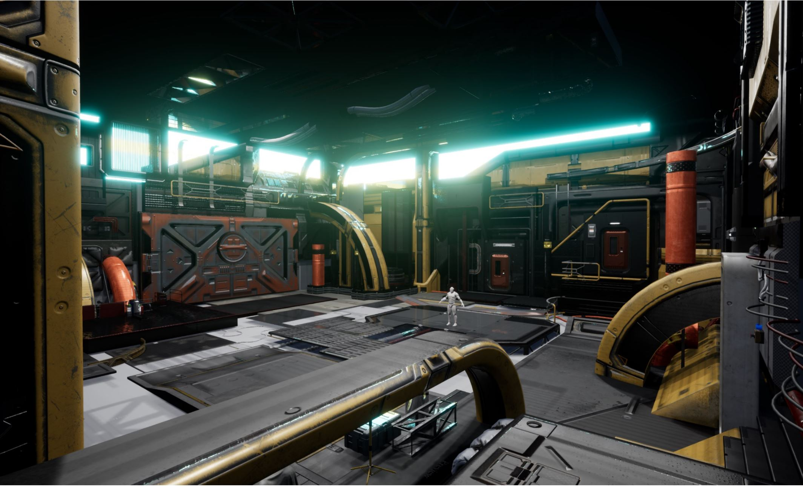
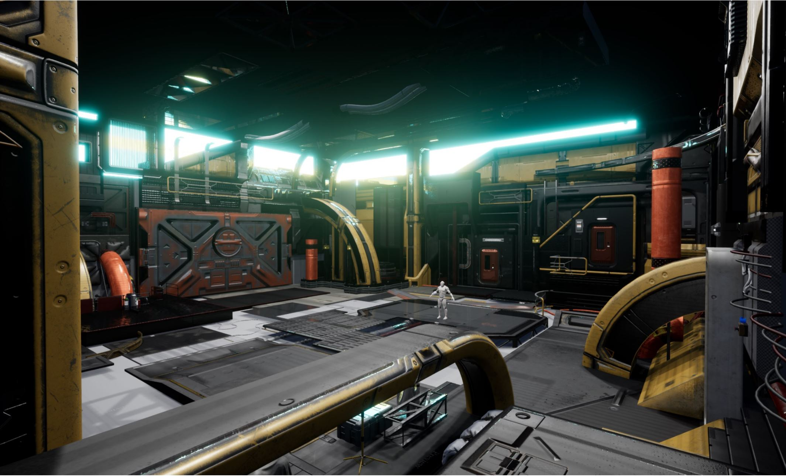

Motion Capture Final Project
 With the avatar set up to be controlled by the motion capture, I attached a camera to the head joint. I found that adjusting the focal length until you had a field of view of around 90 worked pretty well.
Here you can see the locators I set up on the hand and shoulder that you'll see in the blueprints later, the custom arm cannon model, the emitter for the projectiles which is that sphere you see there,
as well as some cubes I forgot to delete.
I spent a ridiculous amount of time trying to get the VR working with the motion capture. I tried tracking the headset, and a few other shenanigans but I found out my issues all stemmed from the fact that I was getting double or triple transformations that resulted in out of body experiences where you would fly out to look at your own body and moving made you rotate or move in all sorts of strange opposite axes. What happened was that when UE4 detects a VR headset, you get physical rotations and positioning from the headset, all the troubles finally came to an end when I found out I just had to disable that with a simple checkmark. I overcomplicated the problems but thankfully I got through it.
For making the Oculus Quest specifically work with UE4, you need to disable the Oculus VR plugin ironically and turn on the steam VR plugin.
To get the camera you setup and parented to your motion capture avatar, this was the simple level blueprint I setup, the open and close port portion you see here was just for the arduino stuff. You'll also
need to have the arduino plugin installed and turned on to follow the blueprints later also.
Then you need to turn on the oculus software to get the oculus link working as well as steam VR. For the quest to be able to stream UE4, currently, you need a USB connection so I got a special 26-foot
USB 3.0 to USB c wire. Be careful with which one you get, it's no ordinary USB wire because Oculus Link requires specific specs. With all that setup select play from VR and you'll be good to go.
For my model, I went and polished the model up. I didn't quite have time to do a low poly game model workflow with normal maps, texturing, and all that but my pc was able to handle the extra polys.
I just used materials I made so I assigned different parts with different materials, this workflow also requires rigging, simple skinning, and animation. Getting things into UE4 can come with some
issues here and there but I think I didn't have too many this time.
For the weapon animations, I had the blueprint check to see if the distance between the arm and shoulder above more than 40 units, when that's reached the animation plays and continues to the next step.
I had UE4 send a signal to Arduino to set if the weapon was armed or not by printing a 3 or 4, if it is armed it continues to the next step.
With the avatar set up to be controlled by the motion capture, I attached a camera to the head joint. I found that adjusting the focal length until you had a field of view of around 90 worked pretty well.
Here you can see the locators I set up on the hand and shoulder that you'll see in the blueprints later, the custom arm cannon model, the emitter for the projectiles which is that sphere you see there,
as well as some cubes I forgot to delete.
I spent a ridiculous amount of time trying to get the VR working with the motion capture. I tried tracking the headset, and a few other shenanigans but I found out my issues all stemmed from the fact that I was getting double or triple transformations that resulted in out of body experiences where you would fly out to look at your own body and moving made you rotate or move in all sorts of strange opposite axes. What happened was that when UE4 detects a VR headset, you get physical rotations and positioning from the headset, all the troubles finally came to an end when I found out I just had to disable that with a simple checkmark. I overcomplicated the problems but thankfully I got through it.
For making the Oculus Quest specifically work with UE4, you need to disable the Oculus VR plugin ironically and turn on the steam VR plugin.
To get the camera you setup and parented to your motion capture avatar, this was the simple level blueprint I setup, the open and close port portion you see here was just for the arduino stuff. You'll also
need to have the arduino plugin installed and turned on to follow the blueprints later also.
Then you need to turn on the oculus software to get the oculus link working as well as steam VR. For the quest to be able to stream UE4, currently, you need a USB connection so I got a special 26-foot
USB 3.0 to USB c wire. Be careful with which one you get, it's no ordinary USB wire because Oculus Link requires specific specs. With all that setup select play from VR and you'll be good to go.
For my model, I went and polished the model up. I didn't quite have time to do a low poly game model workflow with normal maps, texturing, and all that but my pc was able to handle the extra polys.
I just used materials I made so I assigned different parts with different materials, this workflow also requires rigging, simple skinning, and animation. Getting things into UE4 can come with some
issues here and there but I think I didn't have too many this time.
For the weapon animations, I had the blueprint check to see if the distance between the arm and shoulder above more than 40 units, when that's reached the animation plays and continues to the next step.
I had UE4 send a signal to Arduino to set if the weapon was armed or not by printing a 3 or 4, if it is armed it continues to the next step.
 Next UE4 will be listening for the arduino to send it the 1 signal that I setup which is the button press, if everything is true, then UE4 will send a 5 back to arduino causing the solonoids to activate
for the haptic feed back.
Next UE4 will be listening for the arduino to send it the 1 signal that I setup which is the button press, if everything is true, then UE4 will send a 5 back to arduino causing the solonoids to activate
for the haptic feed back.
 Lastly is the bullets that are spawned from a little sphere I setup near the wrist. The blueprint for the projectle just consists of a sphere that I put a very emissive glow on and shooting off
in a direction with no gravity.
Lastly is the bullets that are spawned from a little sphere I setup near the wrist. The blueprint for the projectle just consists of a sphere that I put a very emissive glow on and shooting off
in a direction with no gravity.
 Here's how the weapon looks grown large and with some cool metallic materials that I setup.
For my level, I wanted to go with a complicated-looking sci-fi scene so from the Unreal Marketplace I found some free asset packs that I grabbed and used to assemble my level.
It was a mess to try and organize all the assets but once I got going I think it turned out pretty well.
I tried to focus on good compositions and stuff like that. To fill in the blanks up on the top I found that a glowy material did a good job and added to the sci-fi feeling.
The lighting was pretty simple, I think I had about 12 rectangle lights on the ceiling and that was pretty much it.

Overall I was pretty happy with how things came out, sorta messy but still looking cool. When I get a chance and when the weather doesn't stop me again, I'd like to record my tech demo
with all the new art I setup in this environment.
For the character, I got a kit-bash collection from Vitaly Bulgarov's store. I started with a female form and tried to fit things nicely just like how I did the environment.
After that, I set up a simple skeleton for the motion capture and did some simple skinning as well.
She came out pretty good I think, I forgot to do the hair/ didn't have enough time/ hair is a pain in the butt.
The kitbash out of Maya was pretty blocky, so using ZBrush, I was able to form things back to a female shape. In the future, I'd like to make a male avatar for this as well.
The porcelain look was good and all but I was starting to dig the hyper emissive look so I slapped that on and I thought it looked pretty cool so I kept it.
With a bunch of noisy detail and a glowing face, I think she stands out in the game level, pretty hard to miss, to be honest.
Overall I was pretty happy with my final project outcome. I learned a ton of stuff, although rough my concept did work and I got very comfortable with setting up and using motion capture because of all those hours I spent locked up in that lab trying to troubleshoot silly things. I got out of my comfort zone and got further into blueprints and coding. The class was fun and I'll be able to use a bunch of these skills in my future endeavors.
Here's how the weapon looks grown large and with some cool metallic materials that I setup.
For my level, I wanted to go with a complicated-looking sci-fi scene so from the Unreal Marketplace I found some free asset packs that I grabbed and used to assemble my level.
It was a mess to try and organize all the assets but once I got going I think it turned out pretty well.
I tried to focus on good compositions and stuff like that. To fill in the blanks up on the top I found that a glowy material did a good job and added to the sci-fi feeling.
The lighting was pretty simple, I think I had about 12 rectangle lights on the ceiling and that was pretty much it.

Overall I was pretty happy with how things came out, sorta messy but still looking cool. When I get a chance and when the weather doesn't stop me again, I'd like to record my tech demo
with all the new art I setup in this environment.
For the character, I got a kit-bash collection from Vitaly Bulgarov's store. I started with a female form and tried to fit things nicely just like how I did the environment.
After that, I set up a simple skeleton for the motion capture and did some simple skinning as well.
She came out pretty good I think, I forgot to do the hair/ didn't have enough time/ hair is a pain in the butt.
The kitbash out of Maya was pretty blocky, so using ZBrush, I was able to form things back to a female shape. In the future, I'd like to make a male avatar for this as well.
The porcelain look was good and all but I was starting to dig the hyper emissive look so I slapped that on and I thought it looked pretty cool so I kept it.
With a bunch of noisy detail and a glowing face, I think she stands out in the game level, pretty hard to miss, to be honest.
Overall I was pretty happy with my final project outcome. I learned a ton of stuff, although rough my concept did work and I got very comfortable with setting up and using motion capture because of all those hours I spent locked up in that lab trying to troubleshoot silly things. I got out of my comfort zone and got further into blueprints and coding. The class was fun and I'll be able to use a bunch of these skills in my future endeavors.
home
while (!deck.isInOrder()) {
print 'Iteration ' + i;
deck.shuffle();
i++;
}
print 'It took ' + i + ' iterations to sort the deck.';